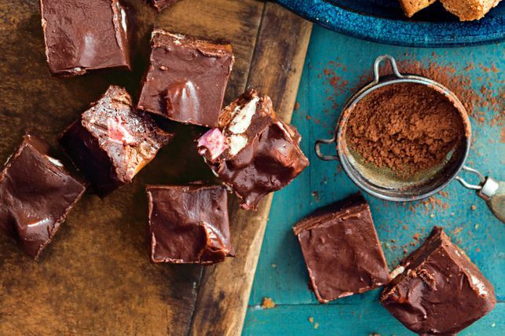

Mars Bar Mallow Fudge

Description
The sum of yum! A little kitchen know-how + a few baking shortcuts = simple sweets.
Start this recipe the day before.
Ingredients
- 2 x 395g cans sweetened condensed milk
- 3 x 180g blocks dark chocolate, chopped
- 3 x 72g Mars Bars, chopped
- 1/2 x 250g packet marshmallows, quartered
Steps
- Grease an 18cm x 28cm slice pan. Line base and all sides with baking paper, extending paper 2cm above edges of pan.
- Place condensed milk and chocolate in a saucepan over medium heat. Cook, stirring, for 5 minutes or until mixture is smooth and combined.
- Working quickly, stir in Mars Bars and marshmallows. Pour mixture into prepared pan. Level top with a spatula.
- Refrigerate overnight or until firm.